LunaJoy is a precision mental health platform that is specialized in women's mental health through all phases of life including adolescence, pregnancy, postpartum, infertility, miscarriage, loss, perimenopause, and aging.
The startup focuses on delivering care by creating a specialized workforce to provide targeted psychotherapy, medication management + genetic testing, coaching, and holistic wellness.
We’re designing a mobile app for female identifying individuals to manage their mental health and to find the right help they need. We believe these users would be most impacted by our app because of our focus on
the unique health issues that female identifying individuals experience through their different phases of life.
Sketching
The team brainstormed a variety of possible designs for the app.The designs show the key functionalities of the application.
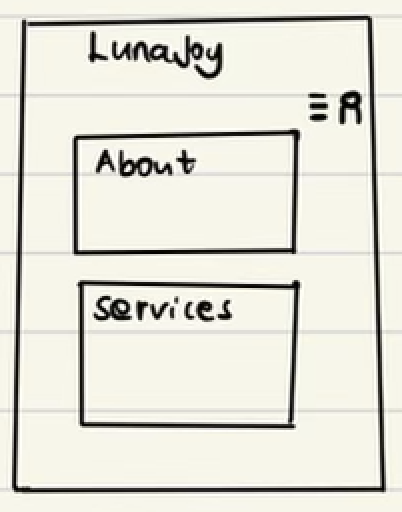
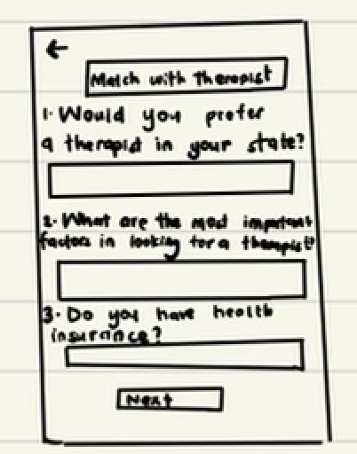
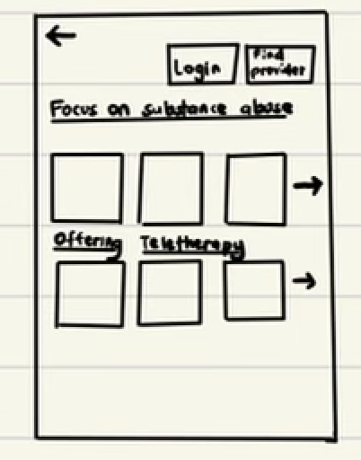
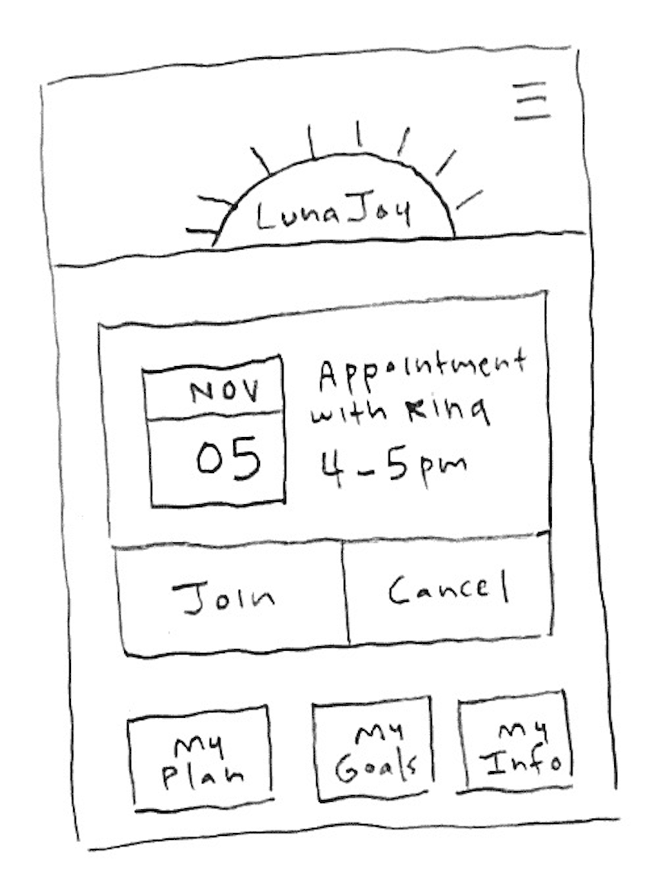
Combining Ideas into a Wireframe
After brainstorming, we decided to merge our ideas and create a final lo-fi prototype. The prototype incorporates major design elements that demonstrate solutions to the startup’s goals.
Design Decisions
Based on information gathered from the survey, users would be matched with therapists. Users are redirected to a match with therapist page, where we users can view the profile of their match. Users can then accept the match or opt to find another therapist.
Mockups
Interactive High-Fidelity Mockup
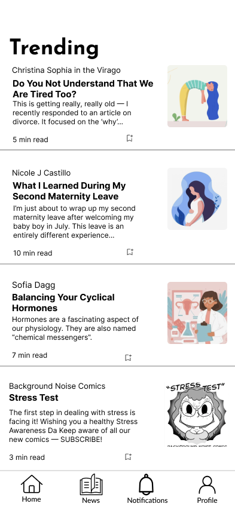
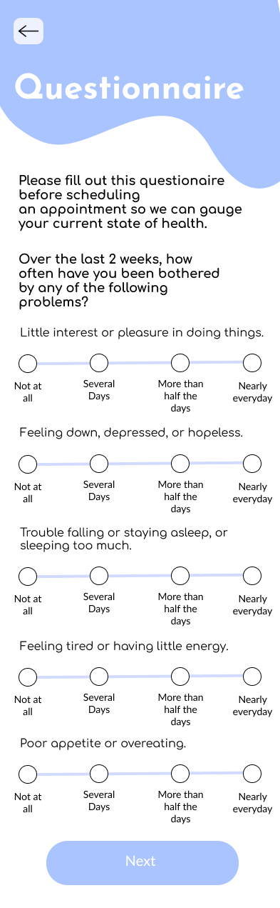
Mockup Crit in Studio
We briefly introduced our startup of choice and allowed peers to interact with the prototype.
Some of the feedback we got from this interactive session is noted below:
It was initially difficult to navigate the different pages, especially navigating from the Questionnaire page to the home page. Having a navigation bar on every screen would have made the navigation process more intuitive.
There was confusion about what the circle on the menstrual cycle means. Having an indication of the number of days that elapsed after the last period would have been helpful.
It would have been beneficial to have a checkmark on medications after a user had taken them.
Our Learn More About your Cycle link on the homepage initially redirected users to the trending news page, which resulted in confusion.
It would have been helpful to have the questions appear one at a time instead of all appearing on the same page.
It was suggested that we included brief labels for the icons on our navigation bar for clarity purposes.
User Testing
Testing Instructions & UserTesting.com
Introductions
Imagine you are a woman in need of a new therapist.
Please schedule a new appointment with a new therapist by following the directions in the app.
To start, find and click the “Schedule new appointment” button.
Note that this is not an actual website but an interactive mockup made on prototyping software — not all the screens are complete.
Tasks
Fill out the questionnaire [Success: Yes, No] [5-point rating scale: Very difficult to Very easy]
Match with a new therapist and contact them [Success: Yes, No] [5-point rating scale: Very difficult to Very easy]
Find the trending news and read them [Success: Yes, No] [5-point rating scale: Very difficult to Very easy]
Questions
What frustrated you most about this site?
If you had a magic wand, how would you improve this site?
What did you like about the site?
How likely are you to recommend this site to a friend or colleague (0=Not at all likely, and 10=Very likely)?
Analysis of Results
User 1
User one was able to complete all tasks with ease. They found the app very user-friendly.
It was easy to navigate to the Trending News page because of the News icon in the navigation bar.
The user was able to fill out the questionnaire with great ease and did not find the process overwhelming.
The user experienced some difficulties in checking off completed medication.
For a first-time user, it wasn’t clear how exactly to check off the medication.
The user expressed that having a checkmark right next to the medication would make the task more intuitive.
User 2
User two thought the interface was well designed and had a nice aesthetic.
They were able to understand the menu navigation bar, but wished that it stayed static on the screen.
When completing the task of filling out the mental health questionare, they found that the interface navigation was intuitive and simple.
They were able to successfully answer all questions to be matched with a therapist.
User two had issues with task two, but understood it to be a prototype issue.
If the prototype was further developed, we would have added more interactions to allow users to message mental health providers.
User two was able to complete the last task, checking off completed medication, but stated that it may be confusing for new users.
User two believed that marking medications as complete would be easy for users to remember over time.
This suggests that to improve usability and learnability, we should design the functionality for completing medication to be more obvious for users.
User 3
User three thought the interface was well-designed, clean, and organized. It was easy for her to find the button to schedule a new appointment, and she correctly assumed that the questionnaire was meant to match you with a therapist even though that was not stated directly in the questionnaire. She experienced some confusion in deciding which button (either the ‘Schedule Appointment’ or ‘Match with a new therapist’ button) to select at the end of the questionnaire. For the task in checking off completed medication, she was able to successfully and easily check off medications but had to decide whether to go to the ‘Home’ tab or the ‘Profile’ tab. She did say that it was easy to check off medication once she went to the right tab, but it might be confusing for a first-time user. She also said it might be more intuitive if the check was next to the medication so the user knows medication can be checked off, which we could implement in our final interface. She also easily accomplished reading the news because she could easily find the ‘News’ tab. She suggested having the button or the text on the button change color when the cursor is on a button to make it more intuitive for the user that the button is clickable. We could also add wording to the questionnaire so that it’s clearer that the user is matching with a new therapist (and does not have a therapist) and that the questionnaire is to help the user find the right therapist for their needs.


 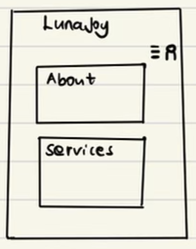
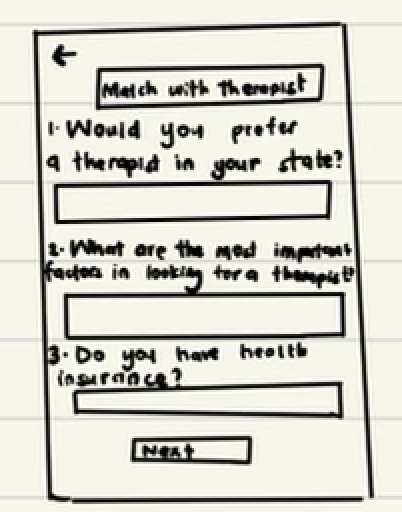
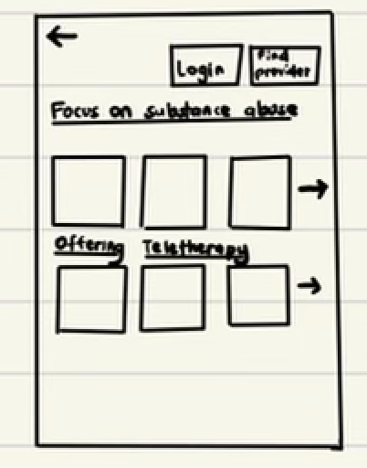
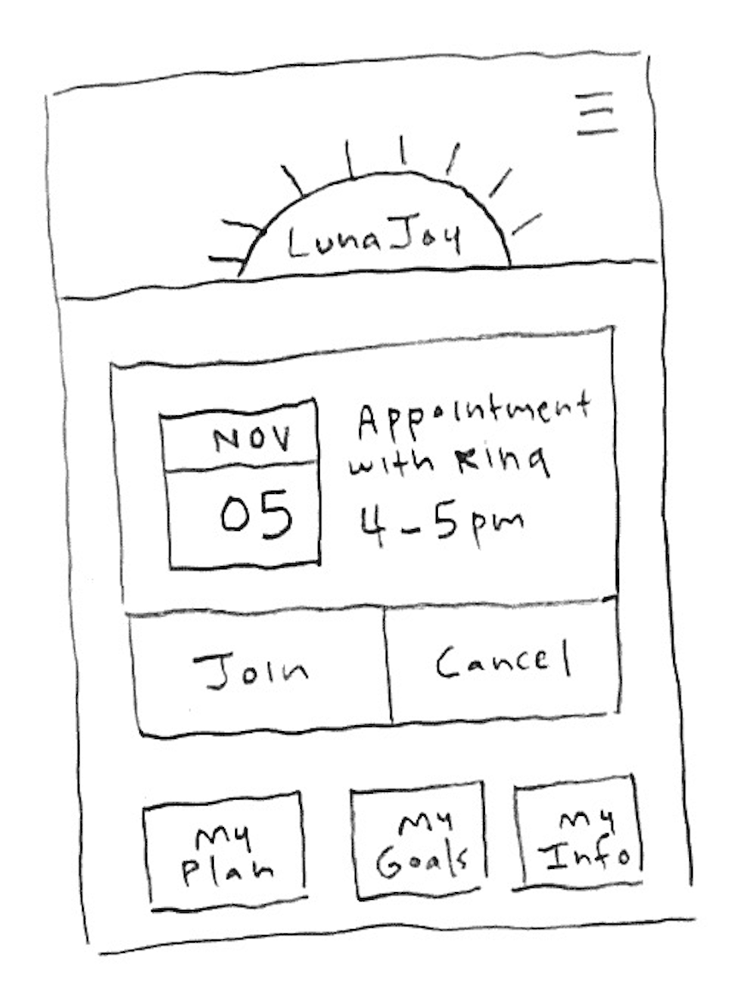
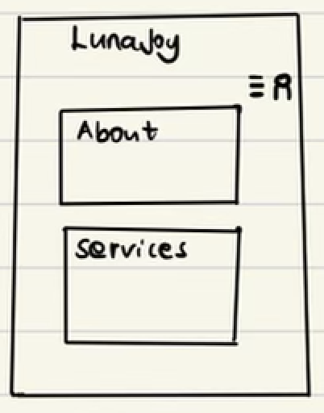
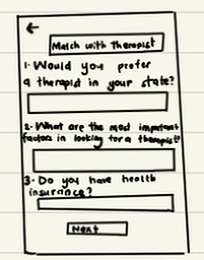
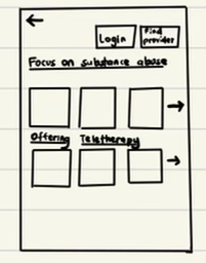
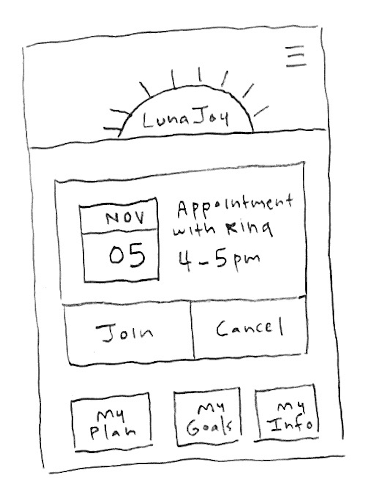


 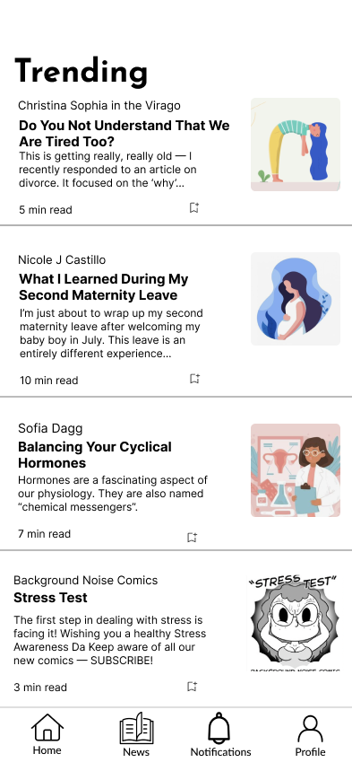
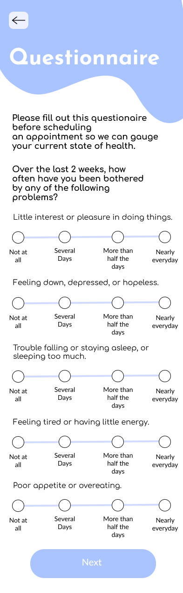
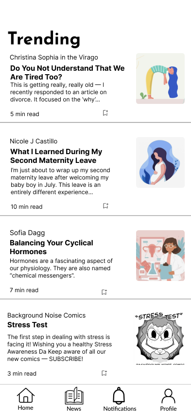
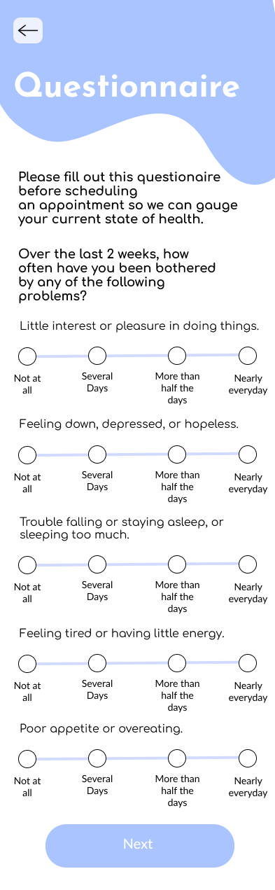